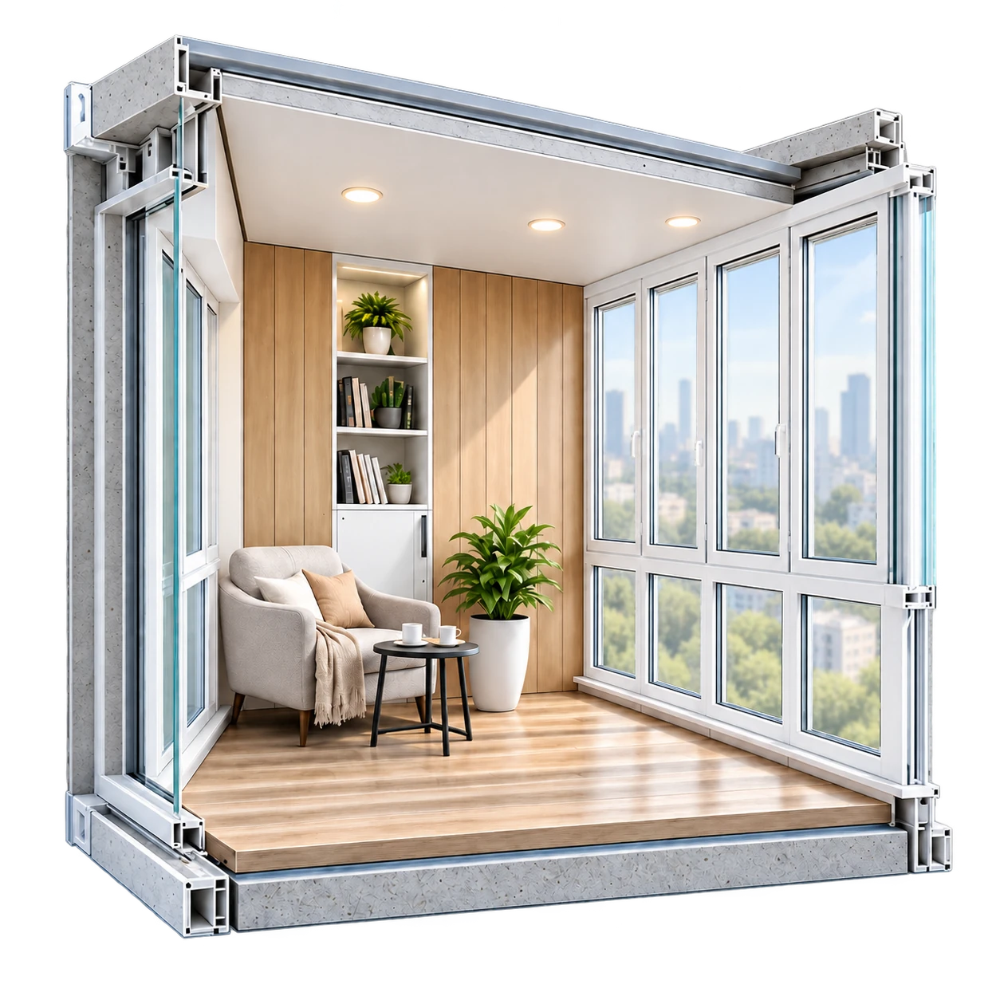

3D-проект
Обсуждайте с клиентом остекление, утепление, отделку и мебель в составе проекта. Наглядный вариант помогает согласовать будущий результат.
Остекление, утепление, отделка и мебель. Покажите клиенту будущий результат, рассчитайте проект и подготовьте задание для бригады.
Попробовать на примере
Иллюстрация возможностей
Обсуждайте с клиентом остекление, утепление, отделку и мебель в составе проекта. Наглядный вариант помогает согласовать будущий результат.
Переносите параметры проекта в калькулятор, проверяйте позиции и сохраняйте расчёт. Цены материалов берутся из базы вашей компании.
Используйте состав проекта при подготовке комплектации. Сохраняйте связь между выбранным решением и необходимыми материалами.
Формируйте документ с видами проекта, материалами, количеством и примечаниями. Паспорт для монтажников не содержит цен. После изменений сформируйте свежую версию.
Проект остаётся частью процесса от заявки и замера до монтажа, оплат и анализа финансового результата. Рассрочка учитывается после сдачи работ.
Руководитель и замерщик-бригадир могут быть разными людьми или одним человеком. По мере необходимости подключаются менеджер и снабженец.
Тарифы соответствуют отраслевым направлениям. Цены и возможные дополнительные модули ещё формируются. Третье направление пока не раскрывается.
Подготовьте свою базу материалов и цен. Начните с одного объекта и пройдите его путь вместе с командой. В знакомстве помогут инструкции и чат-бот.
Как начатьВход в действующую программу и условия доступа будут добавлены отдельно. Сейчас на сайте доступен учебный пример.